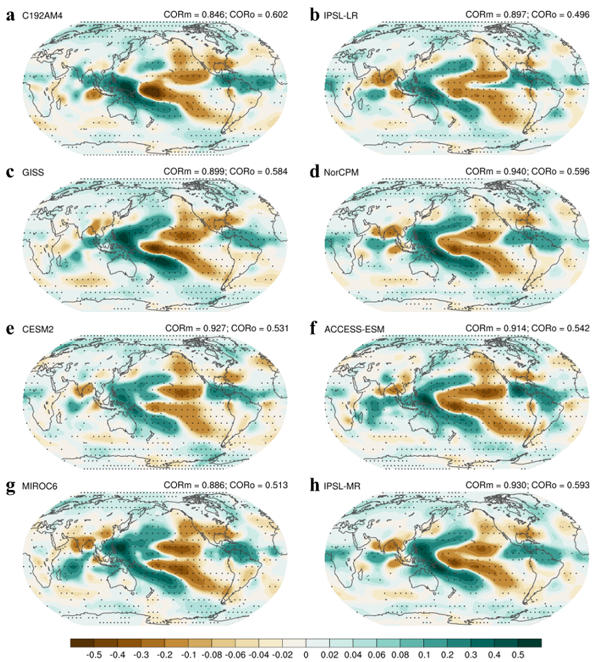

1980-2014
Historical trend window used for model and observational comparisons
Model Development and Evaluation
Large-ensemble analyses separate forced and internal components of precipitation trends, showing that regional observations must be interpreted in a variability-aware framework.
1980-2014
Historical trend window used for model and observational comparisons
AMIP6 Multi-Model
Large ensembles isolate forced responses from internal atmospheric noise
ESSD (2025)
Confronting historical precipitation trends with observations
Related Publication
Liang, Y., et al., 2025: Confronting historical precipitation trends in models with observations: forced signal and atmospheric internal variability. Earth System Science Data.
How much of observed regional precipitation change is externally forced versus internally generated, and how consistently do atmospheric models reproduce those signals?
Ensemble-Mean Trend Pattern
